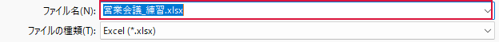

議事録を別名で保存したい

既存の議事録を開いたら、編集を始める前に作業用のファイルを作ります。
操作手順
- 元のファイルを開き、F12 を押します。［名前を付けて保存］画面が開きます。
- 保存先を選びます。例として［ドキュメント］を選び、表示されたフォルダー名を控えます。
- ［ファイル名］をクリックして、元と違う名前（例：営業会議_2026-11-09）を入力します。
- ［ファイルの種類］が元と同じであることを確認し、［保存］をクリックします。
できたか確認
Excel上部に新しいファイル名が表示されましたか。このファイルに入力を始めます。
注意点
同名のファイルを置き換える確認が出たら［いいえ］で戻って別の名前にします。